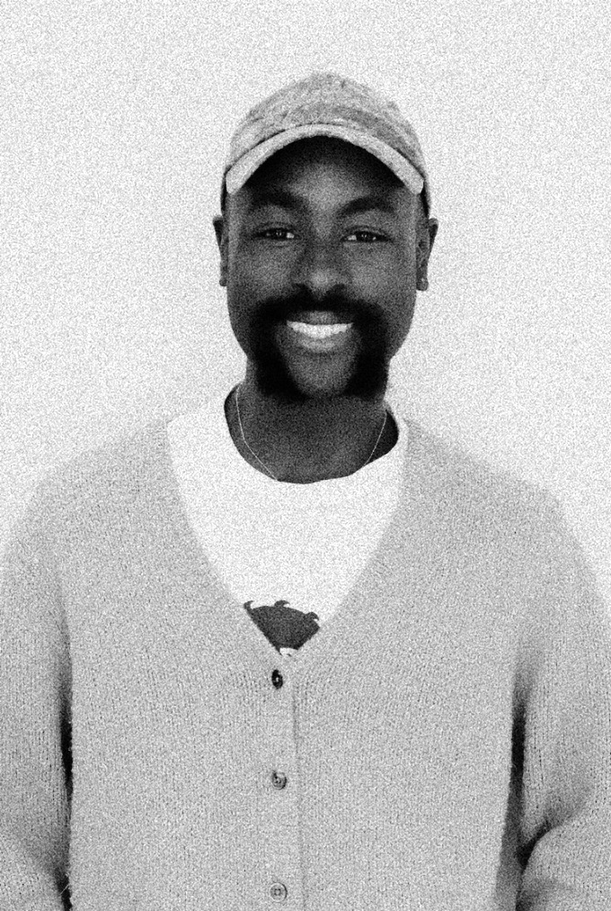

Anthony Faustin
Thank you for taking the time to view my work. I’m a multidisciplinary designer currently based in Port St. Lucie, Florida, after graduating from the University of San Francisco. My work blends low-tech, pixel-based graphics and raw textures to create designs that feel handmade, and human. Whether I’m building a digital experience or reimagining a brand system, I want my work to spark curiosity, invite people to slow down and explore, and leave space for discovery. My creativity is shaped by my love for music, photography, old-school aesthetics, and the unexpected inspiration I find while antiquing, exploring Florida, or gaming with friends.
My Role
Multidisciplinary Designer
Skills + Tools
Design Skills: Typography and Composition, Layout Design, Color Theory, Contrast Exploration, Storytelling Through Design, Visual Research and Historical Integration
Technical Tools: Adobe Creative Suite, Figma, HTML, CSS, p5.js, Version Control (Git/GitHub)
Languages
English, Haitian Creole